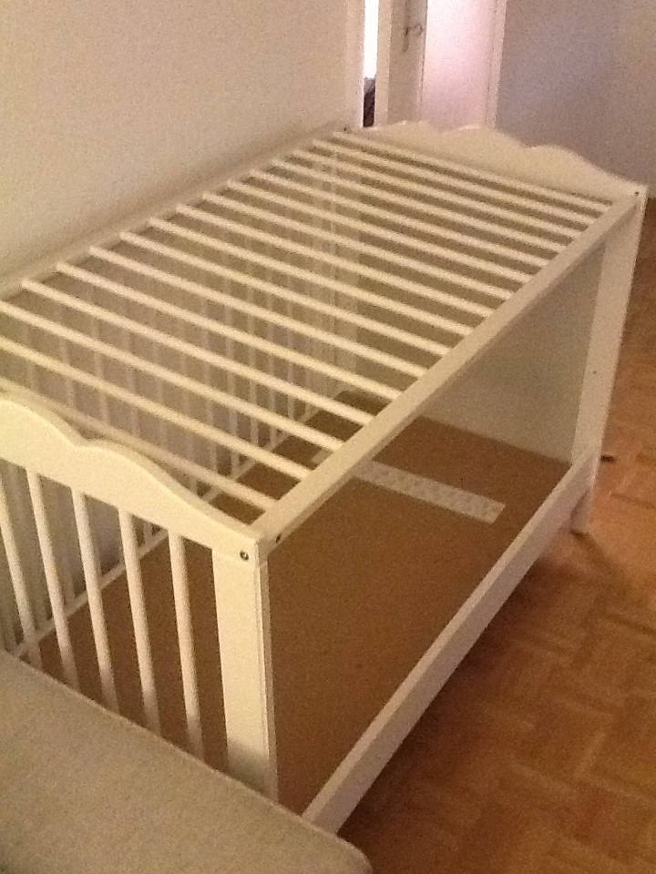

Building trust in #massiveteaching, through visuals
As part of the module on trust in Connected Courses, I would like to share some tricks that I have used to visually build trust across cultures. It was especially powerful for me to watch Jonathan Worth's video on Leveraging your why [1].
Worth offers that his "Why?" for #phonar is actually citizen journalism, and discusses a photo by John Stanmeyer, winner of the World Press Photo 2013 award.
So this brings me back to, this is my ‘why?’ So this image is the winning image from the World Press Photo this year, by a photographer called John Stanmeyer, and this is why it annoys me so much. Because it’s by a photographer called John Stanmeyer. These are African immigrants standing on a beach, trying to get a phone signal before they jump in the water. Let me just get this right, “on the shore of Djibouti City at night raising their phones in an attempt to capture an inexpensive signal from neighbouring Somalia”. These are the people that aren’t in my class. They’re holding these smart devices which can all take pictures, and yet it takes a photographer from New York to bring it back and we can now talk about it. What these people need is to be able to be trusted and to be heard, and these are the people that aren’t in the class. So this is my why, and this is my way marker, so this is definitely the best and most exciting thing that’s come out of my classes.
Part of my efforts with my Coursera course Massive Teaching: News skills required were some interesting blend of Worth's efforts in #phonar and in #connected_courses.
Let's first consider the exact opposite of what I did. Relax, prepare some popcorn, and watch the following video.
Clealy this video exploits the elite university brand together with a lot of pixie dust to try to cement this elite brand even more. The "why?" of this MIT video certainly shows.
Just as in Worth's #phonar course leading up to citizen journalism, I am hoping with parts of Massive Teaching to enable some form of citizen-MOOCing, to create a small distributed network of video production, with no sacrifice on the quality of the education provided. My sidegoal was not to find the cheapest way to produce video, but to find a visual style that could appeal equally to institutions (even very elite) and lonely individuals anywhere in the world [2].
The sidegoal was to make for a more homogeneous and egalitarian pool of video producers [3], but it goes further. How do we enable anyone anywhere to build trust with connected diverse individuals (a concept that I used in a recent talk and is obviously core to #ccourses)? Let's consider one of my videos, where the topic is precisely on tracking of individuals by large corporations, drawing parallels between educational analytics and AdWords style advertising.

Note a few things:
- it uses easily findable DUPLO pieces [4] and paper cutouts;
- I feel that using kids' toys produces emotional responses and increases trust;
- my hands are there, and that makes the videos still personal (contrast with the expense at CEDE@EPFL for their invisible hand effect);
- the production process is first audio, then video, and the two are completely separate (I replay the audio when filming the video). In this way I actually first write the transcript, record a reading, and then illustrate. It makes translations very easy: simply re-record the sound, at the pace of the video.
- I designed a recording studio out of IKEA furniture pieces (a crib, for instance for a cage, so it is easy to attach camera, light, etc); IKEA is not cheap enough but it gives wide reach. I have confidence that this can be improved drastically, by posting on sites such as IKEAhackers;
- I encouraged my students to do the same, by describing my process as throgouhly as possible (done here again);
- None of those cheap tricks are new, it is mere borrowing of on-the-street intelligence of High School teachers and the Maker movement.
As stated, one of the sidegoals was to enable anyone to do this, and for anyone to create trust with anyone else, without necessarily going through a central authority (like that provided by my Coursera course). For this purpose, I selected some articles to help guide students on what might build trust across cultural divides, such as this one, which clearly echoes the emotional response I was referring to earlier.
So what happened with Massive Teaching?
Well, despite my best efforts it turns out that the fact that Coursera owned the channel was still massively important. I might have made sure I owned all the content, and diluted as much as possible all ambient brands, I still needed Coursera for its reach (or at least I felt I did!). Going through them was not a smart way to challenge the general status quo in MOOCs, but the interesting paradox of #massiveteaching is that ultimately it is not the content that went missing, but rather the human (me, the instructor). The content was instead reinstated (well, actually only partially and with questionable motives), and I was unable to access the sources anymore, thereby losing some of my own content. This paradox was then compounded by further issues of trust and disinformation, where again access to communication channels was crucial. This account of course omits any of the students' perspectives, which must have been wildly different, depending on the activities they actually engaged in. With the instructor gone, only disaster was possible.
| [1] | He apparently himself was troubled by Mike Wesch's fantastic talk on Why we need a why (just making the chain of trust explicit here, as explained in the talk...) |
| [2] | Judging from aggregate and individual feedback, that was achieved. |
| [3] | This echoes a parallel effort in academic publishing in some disciplines. Indeed, the refereeing process, which is a form of authority and power, is done double-blind, to prevent reinforcement of biases. In mathematics the author of a submitted paper is not anonymous to the referee, which is arguably a problem. |
| [4] | This in itself is very interestingly pain point. Can I use a DUPLO piece as a tool? I had to ask a lawyer for that. |